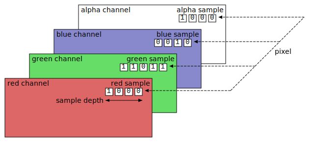
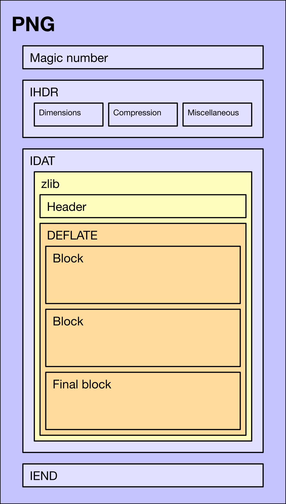

png-compressor
PNG Compressor
Compress and encode data in Portable Network Graphics (PNG) image

Why
It can be useful to encode data or persist application state into an image file, to import/export and share easily. Other formats like JSON and ZIP can be difficult to send by email or upload to a discussion forum.
The PNG image format is a mature standard supported by many languages and environments. It's often used to store and transfer data in addition to the image itself. Examples include the P8PNGFileFormat.
PICO-8 cartridges can be saved in a special
.pngformat and sent directly to other users, shared with anyone via a web cart player, or exported to stand-alone HTML5, Windows, Mac and Linux apps. Any cartridge can be opened again in PICO-8, letting you peek inside to modify or study the code, graphics and sound.
AI image generation tools like ComfyUI and Automatic1111 export PNG files with metadata for prompts and node graphs. Adobe Fireworks used PNG as its native file format, storing data for layers, animation, vector data, text and effects.
How
This library offers two ways to store data in a PNG image.
- Encode the data into color channels to create an image
- Attach invisible data blocks to an existing image
The first method results in an image that looks like colorful noise.
The second method adds data blocks as metadata, without affecting how the image looks.
The image and data blocks (except plain text) are compressed using the classic deflate algorithm for lossless compression, with the Compression Streams API well-supported by browsers and server-side JavaScript runtimes.
Reference
- Portable Network Graphics (PNG) Specification (Second Edition)
- https://en.wikipedia.org/wiki/PNG
- https://github.com/pnggroup/libpng
Install
Install as a dependency in your project.
npm install --save png-compressor
Develop
Clone the project and install dependencies.
git clone https://github.com/eliot-akira/png-compressor
cd png-compressor
bun install
Build for development, watch files for changes and rebuild. Serve static site for documentation at http://localhost:8080.
bun run start
Build for production. Run formatter, tests, minify assets, build docs.
bun run build
Run tests.
bun run test
Use bun run tdd instead to watch files and re-run tests.
Use
Color channels
Use encodeImageData() to convert data into an image buffer by encoding every byte into the color channels (red/green/blue). The opacity (alpha) channel is not used because it affects color values.
The encoded buffer can be written to a file, or rendered as an image element and downloaded.
import { encodeImageData, decodeImageData } from 'png-compressor'
const imageData = await encodeImageData({ key: 'value' })
const decoded = await decodeImageData(imageData)
assert.deepEqual(decoded, object)
The data can be a JSON-serializable object or binary (ArrayBuffer or Uint8Array).
Use decodeImageData to decode JSON value; and decodeImageDataBinary for binary data.
import { encodeImageData, decodeImageDataBinary } from 'png-compressor'
const buffer = new ArrayBuffer(8)
const imageData = await encodeImageData(buffer)
const decoded = await decodeImageDataBinary(imageData)
assert.deepEqual(decoded, buffer)
Data blocks
Blocks of data can be attached to an existing image buffer.
They are stored in the image as ancillary chunks of the PNG format, using tEXt (textual data) and zTXt (compressed textual data).
Each block has a "key" to identify it by name; and a "value" which can be:
- Text -
string - JSON-serializable object
- Binary -
ArrayBuffer,Uint8Array
A key can also group together multiple blocks of the same name, such as a collection of binary data.
Example
import fs from 'node:fs/promises'
import { encodeImageDataBlocks, decodeImageDataBlocks } from 'png-compressor'
const imageData = await fs.readFile('./example.png')
const blocks = {
text: 'hello',
info: { key: 'value' },
file: new ArrayBuffer(8),
// Multiple blocks
items: [
{ name: 'item-1' },
{ name: 'item-2' }
]
}
// Encode
const encodedImageData = await encodeImageDataBlocks(imageData, blocks)
await fs.writeFile('./example-with-data.png', encodedImageData)
// Decode
const decoded = await decodeImageDataBlocks(encodedImageData)
assert.deepEqual(decoded.blocks, blocks)
Browser
Create image element
import { encodeImageData, createImageElement } from 'png-compressor'
const object = { key: 'value' }
const imageData = await encodeImageData(object)
const imageElement = await createImageElement(imageData)
Or pass an image element as second argument to render into it.
const imageElement = document.createElement('img')
await createImageElement(imageData, imageElement)
Download as image
import {
encodeImageData,
createImageBlob,
downloadImageBlob,
} from 'png-compressor'
const imageData = await encodeImageData(object)
const blob = await createImageBlob(imageData)
downloadImageBlob(blob, 'example.png')
Server
Write to image file
import fs from 'node:fs/promises'
import { encodeImageData } from 'png-compressor'
const object = { key: 'value' }
const encoded = await encodeImageData(object)
await fs.writeFile('test.png', Buffer.from(encoded))
Read from image file
import fs from 'node:fs/promises'
import { decodeImageData } from 'png-compressor'
const buffer = await fs.readFile('test.png')
const decoded = await decodeImageData(buffer)